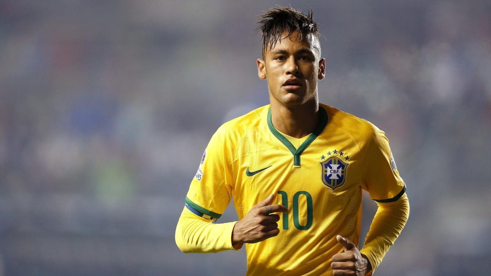

Neymar hraje převážně na levém křídle a jako útočník, občas ale zaskočí i jako podhrotový hráč...
Neymar hraje převážně na levém křídle a jako útočník, občas ale zaskočí i jako podhrotový hráč. Nejčastěji hraje ve formaci 4-3-3 a díky svému energetickému tempu a tvořivosti často zabíhá do stran. Mezi jeho největší přednosti patří již zmíněná kreativita, přihrávky, smrtící zakončení, úžasné driblování a vytříbená technika. "Pokaždé se snažím být perfektní ve všem - v driblování, ve střelbě, v hlavičkových soubojích a kontrole míče. Vždy existuje prostor pro vylepšení," říká sám hráč, který obdivuje Cristiana Ronalda, Xaviho Hernandéze, Andrése Iniestu a Wayna Rooneyho. Srovnáván bývá často s dalším brazilským velikánem, Pelém, což však Neymar nemá rád.
Neymar da Silva Santos Júnior, jak se jeden z největších talentů současné kopané jmenuje celým jménem, se narodil 5. února roku 1992 Neymaru da Silvovi Seniorovi a Nadine Santosové. Otec byl bývalým fotbalistou a tak po něm malý Neymar zdědil jak jméno, tak lásku k tomuto sportu. "Můj táta byl už od mala na mé straně. Staral se o různé věci, o finance a samozřejmě o rodinu," vzpomíná jeho syn, který v dětství miloval hraní futsalu a pouličního fotbalu.
Chvíli po narození se celá rodina přestěhovala do São Vicente, pobřežního města na jihu São Paula, kde Neymar v osmi letech začal hrát za místní celek Portuguesa Santista. V roce 2003 se však přemístil do Santosu a svůj fotbalový um dále rozvíjel ve zdejší akademii, kterou například prošli také Bruno Coutinho Martins, Clodoaldo, Diego Walsh, Elano a Alex.V ní se spřátelil s Paulem Henriquem Gansem, s nímž zůstal dobrým přítelem do současnosti.
Když bylo Neymarovi 14 let, odcestoval do Španělska na testy do Realu Madrid, který si tehdy se Zinedinem Zidanem, Ronaldem či Robinhem v kádru užíval éry Galácticos, nicméně i přes úspěšné absolvování zkoušek se talentovaný mladík nestěhoval, neboť mu klub prý zaplatil 1 milion brazilských realů (v přepočtu něco málo přes 9 milionů českých korun).
Díky jeho úspěšné mládežnické kariéře a lepšímu příjmu v perspektivnější lokalitě, si Neymarovi rodiče mohli koupit první dům. Ve věku 15 let vydělával jejich syn 10 tisíc realů (zhruba 95 tisíc korun) měsíčně, o rok později už to bylo 25 tisíc (230 tisíc korun) a jejich životní úroveň tak neustále vzrůstala. V 17 letech pak Neymar podepsal první profesionální kontrakt, díky kterému se dostal do prvního týmu a do podvědomí sponzorů.
Debut zápas v bílém dresu Santosu Neymar zaznamenal 7. března roku 2009. Tehdy naskočil na závěrečnou půlhodinu utkání s Oeste. Hned týden na to si pak připsal i premiérovou trefu mezi dospělými, když se prosadil přes brankáře celku Mogi Mirim. 11. dubna pak rozhodl utkání s Palmeiras v prvním duelu semifinále Campeonato Paulista, ligy státu São Paulo. Ve finále však ryby (v originále Peixe), jak se Santosu v Brazílií přezdívá, podlehli po celkovém výlsedku 2:4 Corinthians. Ve své první sezoně nakonec Neymar nasbíral 48 startů a v nich nastřílel 14 branek.
Sezona 2010 byla pro 174 centimetrů vysokého křídelníka zlomovou, když v ní nejprve nasázel 5 gólů při vysoké výhře nad týmem Guarani ve vyřazovací části brazilského národního poháru a zopakoval svůj gólový příděl z předchozí sezony, ke kterému mu tentokrát stačilo odehrát 19 střetnutí. Santos nakonec i díky skvělým výkonům Neymara zvítězil v ligové soutěži druhého nejznámějšího státu této jihoamerické země, když díky lepšímu výsledku v semifinále po přestřelkách 3:2 a 2:3 zvítězil nad Santo André. Neymar následně dostal cenu pro nejlepšího hráče soutěže a veřejnost jej začala porovnávat s úspěšnějšími krajany Robinhem a Pelém.
Ve stejném roce odmítli zástupci vedení nabídky nejprve West Hamu, který nabízel 12 milionů liber, a později dalšího londýnského celku, Chelsea. The Blues nabízeli za služby mladého Brazilce dokonce 20 milionů. I přes tento fakt, kterému přidal na váze i samotný hráč když prohlásil, že se soustředí pouze na Santos, jeho agent, Wagner Riberio, naznačil, že kariéra Neymara je jinde. "Chce se stát nejlepším hráčem světa. Šance, že se mu to povede v Brazílií, jsou nulové," řekl. O rok později se Neymar v rozhovoru pro deník Daily Telegraph přiznal, že byl zájmem Chelsea polichocen a že je hrát v Evropě jeho snem. Zároveň však dodal, že postupem času bylo zůstat v rodné zemi dobrým rozhodnutím.
30. listopadu roku 2010 klub prodal za poplatek 3 549 900 brazilských realů (1 a půl milionů eur) 5% podíl z budoucích přestupů investiční společnosti Terceira Estrela Investimentos S.A. (TEISA). Rok předtím ještě rodina prodala 40% podíl sportovních práv skupině DIS Esporte, který je dlouholetým strategickým partnerem Santosu.
Ačkoliv byly jeho první dvě sezony v áčku vynikající, úctyhodných 42 gólů ze 60 zápasů zakryl první negativum Neymarovy hry, kterým byl fakt, že Neymar rád přihrává pády po některých zákrocích. Nejviditelněji do popředí se tento problém dostal 15. září, kdy trenér Santosu Dorival Júnior pověřil v ligovém duelu s Goianiense zahráním pokutového kopu Neymarova spoluhráče i přes to, že cílem faulu byl právě Neymar. Důvodem byla neproměněná penalta z finále Copa do Brasil, které však Santos nakonec stejně vyhrál. To Neymara rozčílilo natolik, že se pohádal s kapitánem Edu Dracenou a musel být uklidňován postranním rozhodčím. Následkem tohoto incidentu měl být dvouzápasový trest, který si Dorival Junior přál, nicméně představenstvo klubu mělo schůzku se samotným hráčem a nakonec s okamžitou platností zkušeného trenéra vyhodil. Ačkoliv se Neymar za své chování několikrát omluvil, někteří o jeho přístupu od této doby stále pochybují.
Konec roku 2010 už byl pro mladého Brazilce zase o něco pozitivnější, když skončil třetí v anketě o nejlepšího fotbalistu z Jižní Ameriky. Lepšími výkony se blýskli pouze Andrés D'Alessandro a Juan Sebastián Verón. Stejné místo obsadil i následující rok v tabulce střelců Copa Libertadores, obdoby evropské Ligy mistrů. Na cestě do finále turnaje, který proti sobě staví ty nejlepší výběry z jihoamerických zemí, nastřílel Neymar 6 branek, včetně té klíčové v semifinále proti Cerro Porteño, ze kterého Santos i Neymarovou zásluhou postoupil po souhrnném výsledku 4:3. V již zmíněném finále, jež se hrálo na dva zápasy, se Brazilci utkali s uruguayským celkem Peñarol. V Montevideu skončilo první vzájemné střetnutí bezbrankovou remízou, v domácím duelu už diváci góly viděli a to hned 3. Ve 46. minutě to byl právě Neymar, který otevřel skóre a po trefách Danila a Durvala se vítězi stali poprvé od roku 1963 hráči Santosu. Vycházející hvězda fotbalové velmoci se navíc stala mužem zápasu.
V listopadu pohrozil prezident klubu, Luis Riberio, Realu, který se znovu snažil o získání Neymara a to tím, že jejich praktiky nahlásí patřičným orgánům ve FIFA. Bílý balet chtěl, aby hráč podepsal předběžnou smlouvu, což hlavní představitel Santosu označil za nemístné. 9. listopadu nakonec Neymar podepsal prodloužení stávajícího kontraktu, který jej měl v klubu kde fotbalově vyrůstal udržet až do Mistrovství světa v roce 2014. To mu zajistilo navýšení platu o rovných 50%, do úrovní, které by evropské velkokluby stále byly schopny platit. Ovšem zpět k fotbalovým záležitostem - 14. prosince Neymar dal další první gól Santosu na velkém turnaji, kterým tentokrát byl světový šampionát klubů v japonské Jokohamě. Domácí Kashiwu Reysol nakonec na Toyota Stadium svěřenci Muricyho Ramalha porazili 3:1 a ve finále narazili na katalánského giganta, FC Barcelonu. V památném utkání, kde se Neymar poprvé střel s Lionelem Messim, jedním ze svých vzorů a oblíbených hráčů, však výběr pod vedením Pepa Guardioly absolutně dominoval a nepustil Brazilce takřka k ničemu. Konečný výsledek 4:0 hovoří za vše. Neymar si však přeci jen jednu střelu na bránu připsal, radost ze skórování mu však překazil Víctor Valdés, který mu své místo mezi nohama včas zavřel.
Rok 2011 ale zakončil ziskem Puskásovy ceny za nejhezčí gól roku. Parádní gól, při kterém dokázal libovou techniku, jež se může pyšnit, vystřihl v utkání normální brazilské ligy zvané Brasileirão Série A proti Flamengu, které však nakonec se svými spoluhráči i přesto prohrál a to po hokejovém skóre 5:4. Na Silvestra se jako druhý hráč Santosu v klubové historii ještě stal nejlepším hráčem Jižní Ameriky a to rekordním rozdílem 60 bodů před druhým Chilanem Eduardem Vargasem a 93 bodů před třetím Gansem. Napodobil tak další legendy kopané v této oblasti světa, mezi které se řadí již jmenovaný Pelé, který pro Santos získal první prvenství v této anketě, Diego Maradona, Romário nebo Zico.
5. února roku 2012 si v den svých 20. narozenin udělil ideální dárek - 100. branku mezi profesionály. Tu dal ve státní lize Palmeirasu. O dvacet dní později pak dvěma góly (jedním z dálky 23 metrů) pomohl svému týmu porazit vysokým rozdílem 6:1 klub Ponte Preta. 7. března se mu dokonce podařil dát hattrick, díky kterému vyřadil brazilského soupeře Internacional ze skupinové fáze Copy Libertadores. 29. března se znovu v Campeonato Paulista dvakrát prosadil přes brankáře týmu Guaratinguetá a o měsíc později se blýskl dalším hattrickem v duelu se São Paulem, který Santos díky Neymarovi vyhrál 3:1. Do ligového finále proti Guarani se prosadil ještě jednou ve čtvrtfinále s Mogi Mirim a dvakrát v semifinále opět proti São Paulu. Poslední utkání turnaje pak skončilo souhrnným výsledkem 7:2, na kterém se Neymar podílel rovnými čtyřmi brankami. Vedle dalšího titulu se Brazilec mohl radovat také z ocenění pro nejlepšího hráče a nejlepšího útočníka celé sezony. I v již zmíněné Copa Libertadores mu to střílelo, když skončil na děleném prvním místě s 8 zásahy. Svůj účet by možná i navýšil, kdyby v semifinále Santos neprohrál s Corinthians.
25. srpna pak znovu zářil v dalším zápase brazilské ligy, když dal dva góly Palmeirasu a 3. listopadu zaznamenal další hattrick ve své seniorské kariéře. Obětí tentokrát bylo Cruzeiro a ke třem trefám si Neymar připsal i jednu asistenci na gól Felipeho Andersona, který dokonal vítězství 4:0. Na začátku prosince pak zopakoval svůj počin z léta a opět se dvakrát zapsal na střeleckou listinu v utkání s Palmeirasem. Tentokrát však k tomu ještě přidal další asistenci, když nahrával Víctoru Andrademu na vyrovnávací branku Santosu. Domácí zápas na stadionu Vila Belmiro tak nakonec skončil 3:1.